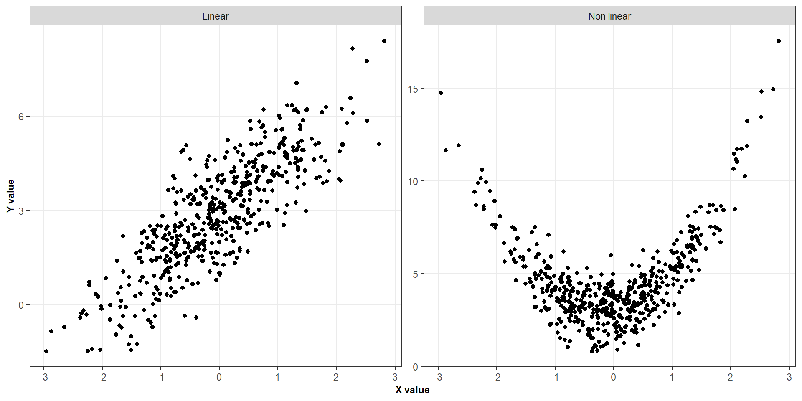
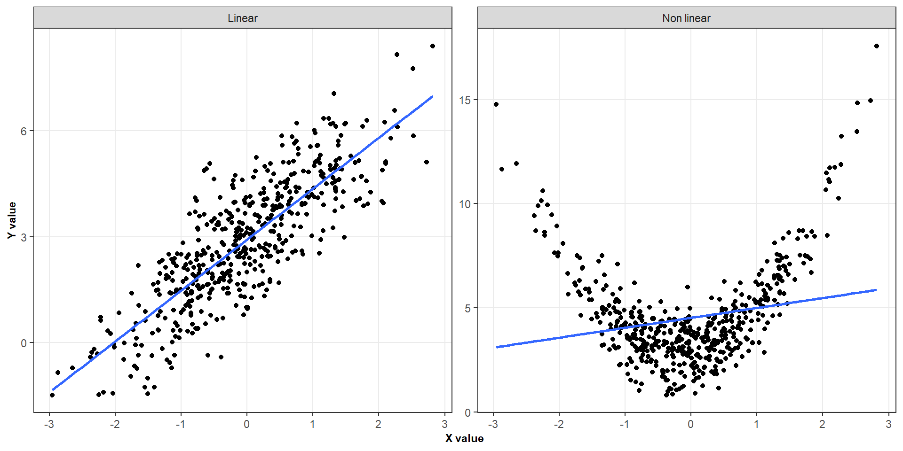
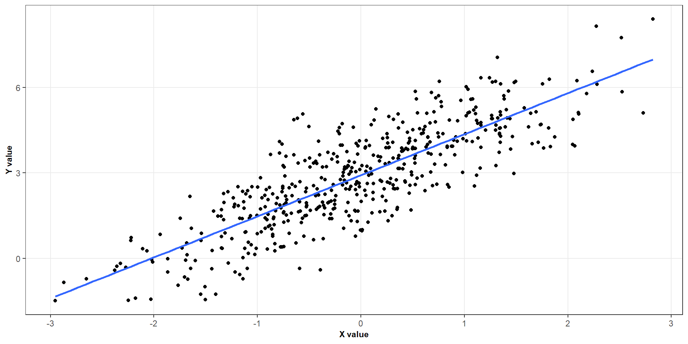
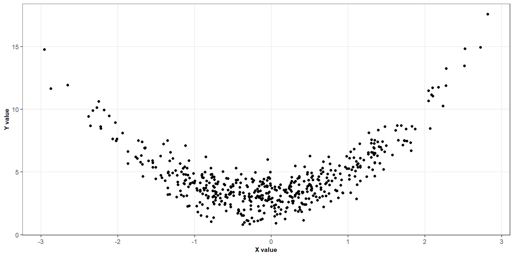
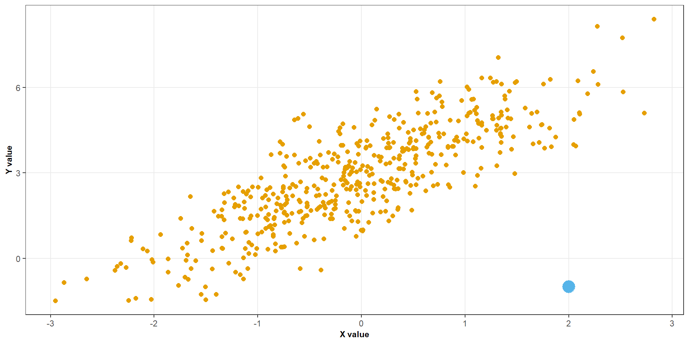
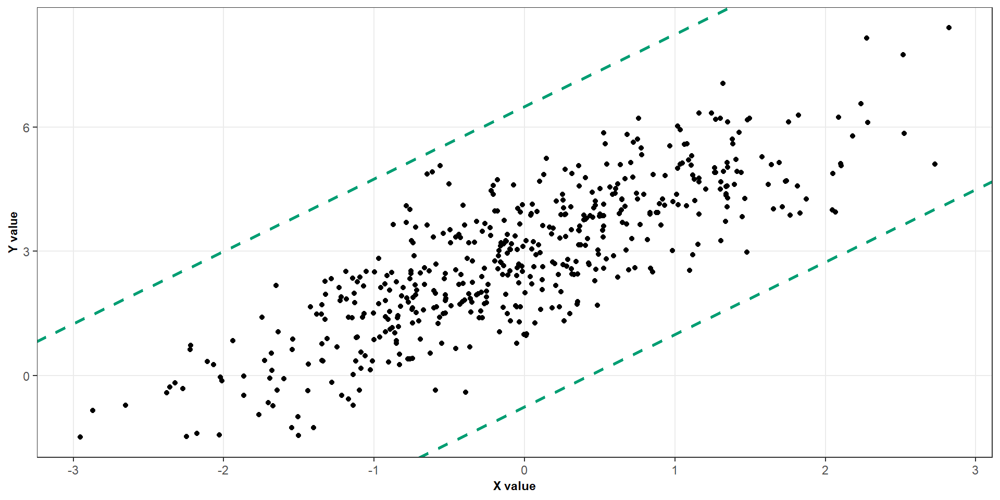
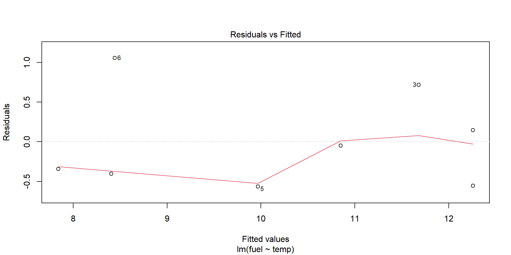
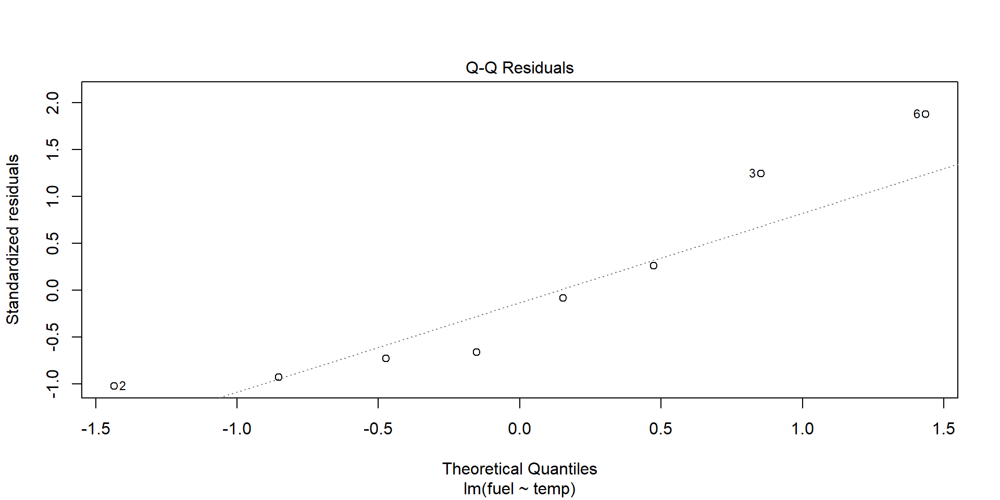
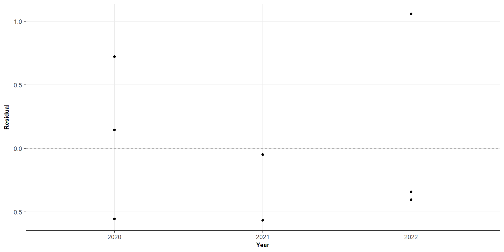
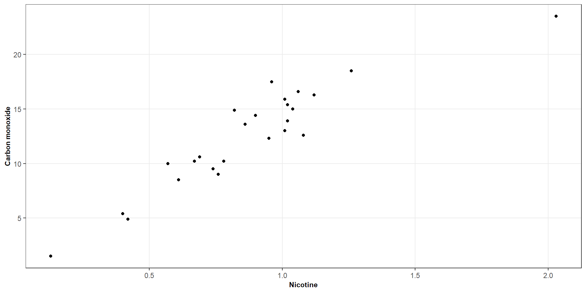

| Assumption | Main concern if violated |
|---|---|
| Linearity | The fitted mean relationship may be systematically wrong |
| Constant variance | Standard errors and confidence intervals may be unreliable |
| Independence | Standard errors and inference may be unreliable |
| Normality | Exact small-sample tests and confidence intervals may be unreliable |
Assessing the model assumptions
ST303 - Linear Models
Today’s question
We can always fit a regression line to a dataset
But when should we trust the results?
Regression models are only useful when our assumptions are reasonably met
Today we will learn how to identify potential problems in our regression models
Learning objectives
By the end of this lecture, we should be able to:
- State the main assumptions of simple linear regression.
- Explain the consequences of violating each assumption.
- Construct and interpret the main diagnostic plots.
- Identify unusual observations and assess their influence.
- Explain when transformations may help and how they affect interpretation.
The simple linear regression model
We model the relationship between a predictor \(X\) and a response \(Y\):
\[ Y_i = \beta_0 + \beta_1 X_i + \varepsilon_i. \]
where
- \(\beta_0\) is the population intercept
- \(\beta_1\) is the population slope
- \(\varepsilon_i\) is the random error for observation \(i\)
The conditional mean is
\[ E(Y_i \mid X_i = x_i)=\beta_0+\beta_1x_i \]
What assumptions are we making
When doing inference from a simple linear regression model we assume
- Linearity: the conditional mean is linear in \(x\).
- Constant variance: the errors have the same variance at each predictor value.
- Independence: the errors are independent.
- Normality: the errors are normally distributed, conditional on the predictor values.
In the classical model, we would write \(\varepsilon_i \overset{\text{ind}}{\sim} \mathcal{N}(0,\sigma^2)\)
Why do these assumptions matter?
An important distinction
A linear mode model can describe the data reasonably well while still providing unreliable standard errors, tests or confidence intervals.
Assumption 1: Linearity
We assume that the expected response changes linearly with the predictor:
\[ E(Y_i \mid X_i = x_i) = \beta_0+\beta_1 x_i \]
This means that a one-unit increase in \(X\) corresponds to the same change in the expected response, regardless of the starting value of \(X\)

Assumption 1: Linearity
We assume that the expected response changes linearly with the predictor:
\[ E(Y_i \mid X_i = x_i) = \beta_0+\beta_1 x_i \]
This means that a one-unit increase in \(X\) corresponds to the same change in the expected response, regardless of the starting value of \(X\)

Assumption 1: Linearity
What should we look for
- Is a straight line a reasonable summary of the relationship?

Assumption 1: Linearity
What should we look for
- Is a straight line a reasonable summary of the relationship?
- Is there evidence of curvature?

Assumption 1: Linearity
What should we look for
- Is a straight line a reasonable summary of the relationship?
- Is there evidence of curvature?
- Are there observations that look unusual?

Assumption 1: Linearity
What should we look for
- Is a straight line a reasonable summary of the relationship?
- Is there evidence of curvature?
- Are there observations that look unusual?
- Is the spread of the observations reasonably similar across the range of \(X\)?

Assumption 2: Constant variance
We assume that the errors have the same variance for all predictor values:
\[ \operatorname{Var}(\varepsilon_i \mid X_i = x_i) = \sigma^2 \]
This is also called homoscedasticity
What does this mean
The spread of observations around the regression line should be approximately constant across the range of the predictor
What if we violate it?
If the variance changes with the predictor, the ordinary least squares estimates can still be unbiased under suitable conditions, but the usual standard errors and inference may be unreliable.
Assumption 3: Independence
We assume that the errors from different observations are independent.
For distinct observations \(i\) and \(j\)
\[ \operatorname{Cov}(\varepsilon_i,\varepsilon_j) = 0 \]
Independence can be questionable when observations are collected:
- Repeatedly over time.
- From the same individual or household.
- From individuals within the same group or organisation.
- In a spatial or otherwise clustered structure.
Assumption 4: Normality
For the exact small-sample inference, we assume
\[ \varepsilon_i\mid X_i = x_i \sim N(0,\sigma^2). \]
Moderate departures from normality may be less concerning in larger samples
Diagnostic plots
We will focus on four graphical checks
- Response versus predictor
- Residuals versus fitted values
- Normal Q–Q plot
- Residuals versus time or observation order
No single plot establishes that all assumptions hold.
Diagnostic plots
Residuals versus fitted values

Diagnostic plots
Residuals versus fitted values

What would we like to see?
- Residuals scattered around zero.
- No systematic curved pattern.
- No obvious change in the vertical spread.
- No unexplained extreme residuals.
The red smooth curve should be approximately horizontal around zero.
It helps reveal systematic patterns that may be difficult to spot in the individual points.
Diagnostic plots
Reading a residual plot
Reasonable pattern
- No clear curvature
- Similar spread across the fitted values
- Residuals fluctuate around zero
Potential warning signs
- Curvature: possible nonlinearity.
- Funnel shape: possible changing variance.
- Isolated points: possible outliers.
- Clusters or other structure: investigate the data and model.
A residual plot is a diagnostic tool, not a formal pass-or-fail test
Diagnostic plots
Normal QQ plots

Diagnostic plots
Normal QQ plots
The normal quantile–quantile (Q–Q) plot compares the ordered residuals with the quantiles expected under a normal distribution.
What should we look for?
- Points following an approximately straight line.
- Large departures at either end.
- Strong curvature or an S-shaped pattern.
Small departures are common
We are looking for substantial departures that could undermine the assumptions needed for our intended inference.
Diagnostic plots
Residuals versus time

Diagnostic plots
Residuals versus time
When observations are collected over time, their order may matter
Things to look out for
- A sustained upward or downward trend
- Long runs of positive or negative residuals
- Repeating patterns or cycles
- Clusters of observations with similar residuals
A pattern may suggest serial dependence, an omitted time trend or another feature that the model does not capture.
What do to if an assumption is violated
| Problem | Possible next step |
|---|---|
| Nonlinear mean relationship | Consider a transformation of X, polynomial terms or another model |
| Non-constant variance | Consider a transformation of Y, weighted least squares or heteroscedasticity-robust inference |
| Dependence | Model the dependence or use an appropriate method for the sampling structure |
| Non-normal errors | Investigate unusual observations, skewness and the adequacy of the model |
These are possible next steps, not automatic rules
We should first understand the data and the reason for the diagnostic pattern.
Let’s do a case study
Cigarette data (using the RServer)

Let’s do a case study
Cigarette data (using the RServer)
# Fit a simple linear model (carbon monoxide ~ nicotine)
my_model <- lm(carbon_monoxide ~ nicotine, data = cigarette)
# What is the output of the model
summary(my_model)
##
## Call:
## lm(formula = carbon_monoxide ~ nicotine, data = cigarette)
##
## Residuals:
## Min 1Q Median 3Q Max
## -3.3273 -1.2228 0.2304 1.2700 3.9357
##
## Coefficients:
## Estimate Std. Error t value Pr(>|t|)
## (Intercept) 1.6647 0.9936 1.675 0.107
## nicotine 12.3954 1.0542 11.759 3.31e-11 ***
## ---
## Signif. codes: 0 '***' 0.001 '**' 0.01 '*' 0.05 '.' 0.1 ' ' 1
##
## Residual standard error: 1.828 on 23 degrees of freedom
## Multiple R-squared: 0.8574, Adjusted R-squared: 0.8512
## F-statistic: 138.3 on 1 and 23 DF, p-value: 3.312e-11Let’s do a case study
Cigarette data (using the RServer)
Let’s do a case study
Cigarette data (using the RServer)
# Let's refit the model without observation 3 (the outliers)
my_model_no_outlier <- lm(carbon_monoxide ~ nicotine, data = cigarette[-3, ])
# What is the new output
summary(my_model_no_outlier)
# And now we can look at our diagnostics again
plot(my_model_no_outlier, which = 1)
plot(my_model_no_outlier, which = 2)Let’s do a case study
Cigarette data (using the RServer)
# We can also transform our variables ------------------------------------------
cigarette_models <- list(
"Original scale" = lm(
carbon_monoxide ~ nicotine,
data = cigarette
),
"Square root predictor" = lm(
carbon_monoxide ~ sqrt(nicotine),
data = cigarette
),
"Square root both" = lm(
sqrt(carbon_monoxide) ~ sqrt(nicotine),
data = cigarette
),
"Log both" = lm(
log(carbon_monoxide) ~ log(nicotine),
data = cigarette
)
)
# Create a 2 × 2 plotting area -------------------------------------------------
par(mfrow = c(2, 2))
# Let's look at our plots
purrr::imap(cigarette_models, function(model, name) {
plot(model, which = 1)
title(main = name)
})